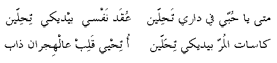

mataa ya Hobbi fee daary taHelleen
'oqad nafsee beedeiky taHelleen
kasaat el-morr beedeiky teHalleen
o teHyee qaleb 'al-hejraan Thaab
When, O my love will you live in my house
And treat, with your hands, all my emotional problems
And sweeten, with your hands, the bitter drinks
And cure a heart that melted because of being distanced
Go
back to Palestinian Songs Page
Go back
to Palestinian Folklore Page